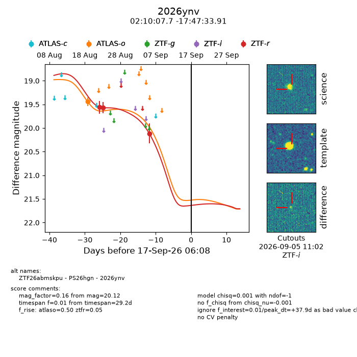
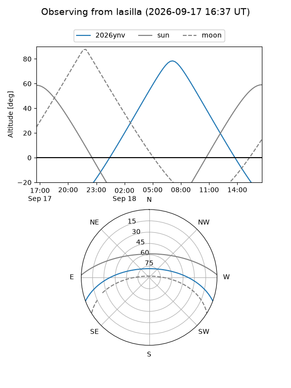
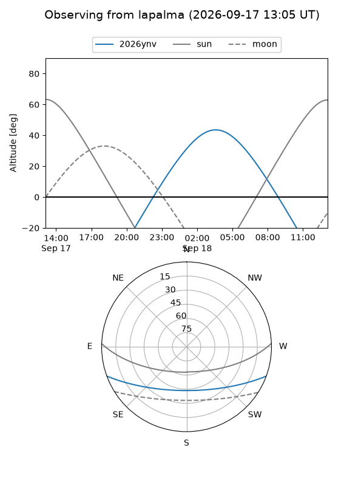
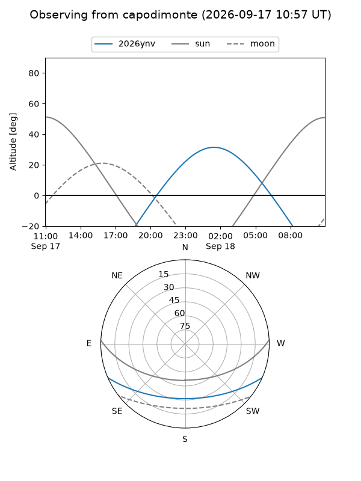
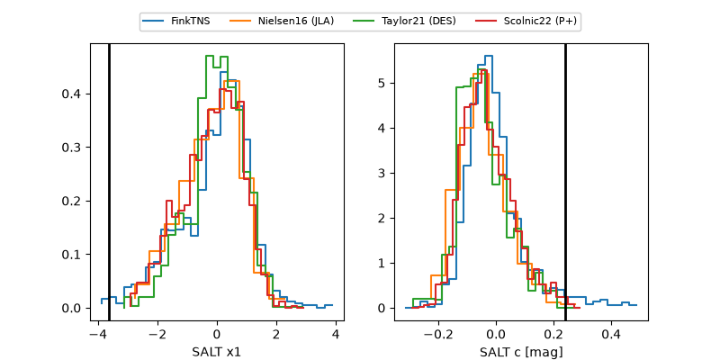

2026ynv
Target 2026ynv at 2026-09-17 17:15
Aliases and brokers:
FINK-ZTF: ztf.fink-portal.org/ZTF26abmskpu
Lasair-ZTF: lasair-ztf.lsst.ac.uk/objects/ZTF26abmskpu
ALeRCE-ZTF: alerce.online/object/ZTF26abmskpu
YSE-PZ: ziggy.ucolick.org/yse/transient_detail/2026ynv
TNS name: wis-tns.org/object/2026ynv
Direct TNS query: direct search
alt names
ZTF26abmskpu (ztf,fink_ztf)
2026ynv (tns,yse)
PS26hgn (panstarrs)
Coordinates:
equatorial (ra, dec) = 32.5321,-17.79275
equatorial (HMS+DMS) = 02:10:07.70,-17:47:33.91
galactic (l, b) = (189.8092,-69.60181)
Flags:
TNS type: nan
peak dt: +38.3
Photometry:
last atlaso=19.44, ztfr=20.12
1 atlaso, 3 ztfr detections
Lightcurve

Visibility



Additional plots
